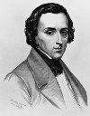

Polonyalı vatansever ve bestekar Fryderyk Chopin (1810–1849) yetişkin hayatının büyük bölümünü Paris’te geçirdi. Buna karşılık ülkesinin bağımsızlığına verdiği destekten ötürü memleketinde ulusal bir kahraman olarak görülmektedir. Aynı zamanda 19. yy’ın en çok sevilen ve taklit edilen bestekarlarındandır. Piyano besteleri klasik repertuarın parçaları haline gelmiştir.
Chopin, Varşova yakınlarında bir köy olan Zelazowa Wola’da doğdu. Annesi yerel bir asilin evinde kahyalık yapıyordu. Babası 1780’lerde Polonya’ya gelmiş olan bir Fransız’dı. Fryderyk’in doğumundan kısa bir süre sonra aile Varşova’ya göç etti. Chopin’in çocukluğu orada geçti.

Bir müzik dehası olan Chopin altı yaşında piyano dersleri almaya başladı. Aynı yıl içinde ilk iki bestesini yaptı. On iki yaşına geldiğinde öğretmeni ona ders vermeyi bıraktı. Öğretecek hiçbir şeyi kalmadığını söylüyordu.
1829 yılında Varşova Üniversitesi’nde müzik teorisi eğitimi aldıktan sonra Viyana’ya gitti. Şehre vardıktan sadece birkaç gün sonra Polonya’da Rus yönetimine karşı bir isyan çıktığını haber aldı. Polonya’ya dönüp asilere katılmayı düşünse de sonunda Viyana’da kalmaya karar verdi. Çok geçmeden isyan bastırıldı. Chopin bir daha asla Polonya’ya dönemeyecekti.
1831 yılında Paris’e gitti. Buradaki Polonyalı mültecilerin arasına katıldı. En bilinen piyano bestelerini Paris’te yazdı. 1837 yılında romancı George Sand (1804–1876) ile duygusal bir ilişki yaşadı. Söylendiğine göre Sand, 1847 yılında oğlunun isteği üzerine bu ateşli ve dillere destan ilişkiye son verdi.
Chopin, gizemli bir hastalık nedeniyle bir yıldan uzun bir süre acı çektikten sonra otuz dokuz yaşında öldü. Naaşı isteğine uygun olarak Fransa’ya gömüldü. Kalbi ise Polonya’ya gönderildi ve Varşova’daki bir kilisede defnedildi.
Ek Bilgiler
1- Chopin bestelerine isim vermemiş, onları sadece numaralandırmıştı. Zamanla bu eserlere takma adlar takıldı: “Piano Sonata no. 2 in B-flat Minor, Opus 35” için “Cenaze Marşı” ve “Polonaise in A-flat Major, Opus 53” için “Kahramanca” gibi.
2- Ölümünün ardından bedeni Paris’teki Père Lachaise mezarlığına gömüldü. Aynı mezarlığa daha sonra rock yıldızı Jim Morrison (1943–1971) da gömülecekti.
3- Aktör Hugh Grant (1960–), 1991 yapımı “Impromptu” filminde Chopin’i oynadı.